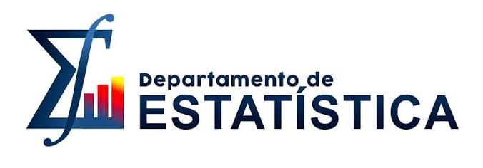

O VoxAI estima o Grau Geral de disfonia da escala clínica GRBASI (G0 a G3) usando medidas acústicas extraídas de duas gravações curtas de voz e um modelo de aprendizado de máquina treinado com vozes avaliadas por fonoaudiólogos.
O teste roda no navegador, sem cadastro. Versões para Android e iOS estão em desenvolvimento.
A disfonia é uma dificuldade ou desvio na produção vocal, caracterizada por qualquer alteração em um ou mais parâmetros acústicos da voz (altura, intensidade e qualidade vocal) que impede a produção natural, confortável e eficiente da fala. Uma forma de avaliar a disfonia é caracterizar o quanto a voz se desvia do esperado: o grau geral de desvio vocal (GG) da escala GRBASI, de G0 (voz normal) a G1 (disfonia leve), G2 (disfonia moderada) e G3 (disfonia intensa). Na prática clínica, esse grau é atribuído de ouvido pelo fonoaudiólogo, e o resultado depende da experiência de quem avalia.
O VoxAI propõe uma triagem objetiva como complemento. O paciente grava a vogal /a/ sustentada e a contagem de 1 a 10. O sistema extrai 20 medidas acústicas dessas gravações e um modelo de aprendizado de máquina estima o grau em alguns segundos, em qualquer navegador.
O VoxAI é uma ferramenta de apoio. O diagnóstico e a decisão clínica continuam com o fonoaudiólogo; o sistema serve para facilitar o rastreio e acompanhar a evolução do paciente ao longo do tempo.
O protocolo de fala é o mesmo usado na coleta do conjunto de treinamento.
O paciente sustenta a vogal /a/ por cerca de 5 segundos e conta de 1 a 10. A gravação acontece no navegador, com verificação de qualidade em tempo real.
O serviço de extração seleciona os trechos vozeados, concatena as duas tarefas e calcula 20 medidas acústicas (f0, jitter, shimmer, CPPS, HNR, GNE, entre outras), replicando as rotinas do Praat.
O modelo devolve o Grau Geral (G0 a G3) com um score contínuo de 0 a 100 e sinaliza os casos próximos da fronteira entre dois graus.
O Grau Geral (GG) da escala GRBASI resume, em quatro níveis, o quanto a voz se afasta do padrão saudável. É essa a escala que o VoxAI estima.
Voz saudável, sem sinais de alteração.
Alteração discreta na qualidade da voz.
Alteração perceptível na voz.
Alteração acentuada (grave).
O VoxAI converte cada gravação em 20 medidas acústicas, que descrevem características do sinal de voz como a estabilidade do tom e a quantidade de ruído. Um modelo treinado com 445 vozes avaliadas por fonoaudiólogos aprendeu a relação entre essas medidas e o grau de disfonia.
Capta a tendência geral dos dados: em média, quanto mais ruído e instabilidade na voz, maior o grau. Serve como base da estimativa para qualquer paciente.
Busca no conjunto de treinamento as vozes acusticamente mais próximas da voz avaliada e usa os graus delas como referência, capturando padrões locais que a tendência geral não descreve.
Um terceiro modelo pondera as duas estimativas e produz o grau final. Na comparação sob validação cruzada, essa combinação superou cada componente isolado, e acrescentar outros modelos não trouxe ganho.
Avaliado por validação leave-one-out: cada uma das 445 vozes foi classificada por um modelo treinado sem ela.
Mede a concordância entre o modelo e a avaliação dos fonoaudiólogos. O valor obtido é classificado como concordância substancial na escala de Landis e Koch.
Em todos os casos, o grau estimado ficou a no máximo um nível do grau de referência. Não houve confusão entre voz normal (G0) e alteração intensa (G3).
Em 7 de cada 10 vozes, o grau estimado coincidiu com o grau atribuído pelo especialista. Nos demais casos, ficou no grau vizinho.
O modelo usa somente as medidas acústicas da voz. Ele não tem acesso aos sub-graus perceptivos (GR, GS, GT, GI) que o fonoaudiólogo avalia de ouvido, o que torna a tarefa mais difícil. Por isso o VoxAI é apresentado como ferramenta de triagem e apoio, com a palavra final sempre do profissional de saúde.
Projeto interdisciplinar entre Computação, Estatística e Fonoaudiologia da UFPB.
 HG
HG JP
JP LM
LM LW
LW PR
PR


Duas gravações curtas, análise imediata no navegador, sem cadastro. Não guardamos a sua gravação de voz.
Iniciar teste